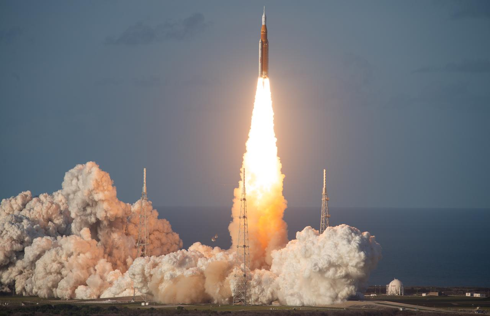
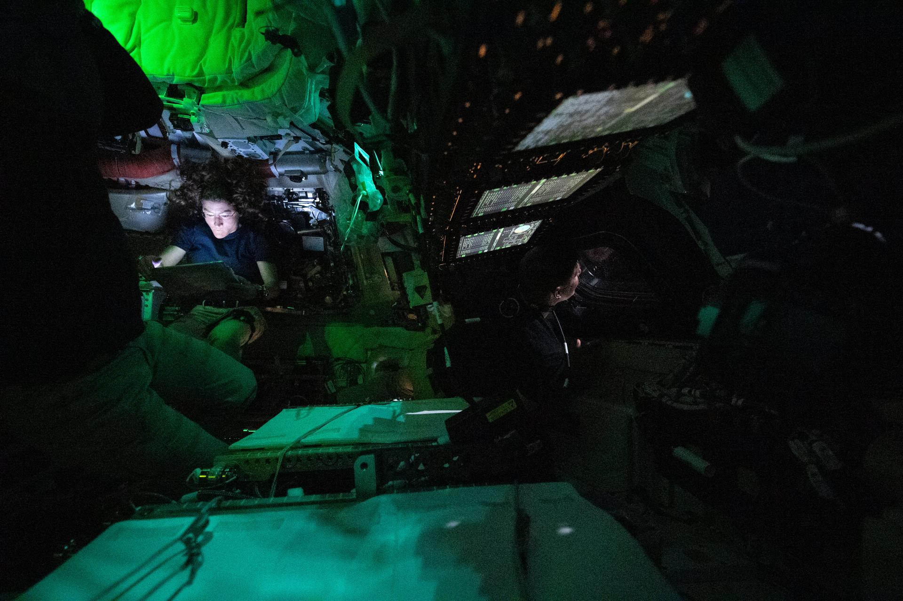
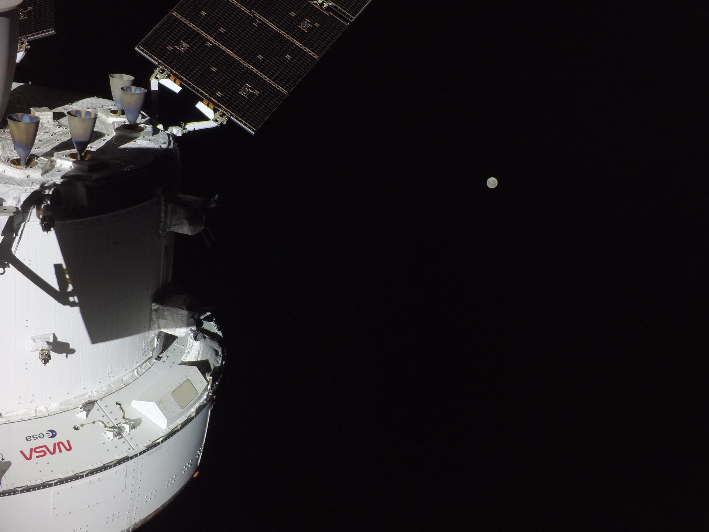
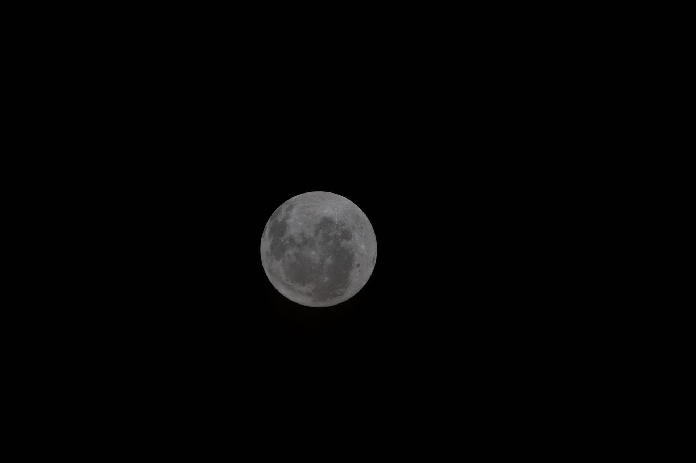
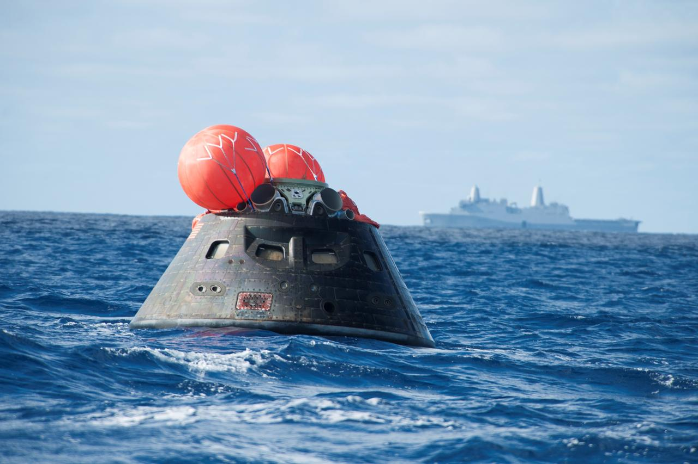

Artemis II
Humanity Returns to the Moon!
Four astronauts are making history as the first crewed lunar mission since Apollo 17 in 1972.
Splashdown!
What's Next?
Artemis III, scheduled for 2027, will launch into Earth orbit to
practice docking with the lunar landers being built by SpaceX and
Blue Origin. Think of it like a practice run before the real thing.
They will also test the brand new spacesuits that future Moon
walkers will wear on the lunar surface.
Artemis IV (2028) is the big one! This will be the first crewed Moon
landing since Apollo 17 in 1972, more than 50 years ago! NASA is
even hoping to attempt a second lunar landing that same year with
Artemis V.
After that, NASA has announced plans to send astronauts to the Moon
about twice a year, every year.
Here's where things get really exciting...
The Moon Base. NASA's
ultimate goal is not just to visit the Moon, but to actually stay
there. The plan is to bild a real base near the lunar south pole,
with habitats where astronauts can live, rovers to drive around and
explore, and power systems to keep everything running through the
long, freezing lunar nights. By the early 2030's, astronauts could
be living on the Moon for weeks or even months at a time! Maybe you
will even be one of those astronauts living on the moon someday!
Everything that happens from here, starting with what Artemis II
proved, is one more step toward that goal. The Moon is not just a
destination anymore. It is where we are learning to live and will
hopefully in the future be a stepping stone to Mars and beyond!
Mission Timeline
Hover to learn more!
SLS lifts off from LC-39B at Kennedy Space Center, Florida at 6:35PM EDT

Orion sits on top of the most powerful rocket ever built. When the engines ignite, they produce 8.8 million pounds of thrust, which is more than 160,000 car engines all running at once! In just 8 minutes, the crew goes from standing still to traveling 17,500 miles per hour!
Crew verifies Orion's life support, navigation, and communication systems in Earth orbit

Before heading to the Moon, the crew spends a full day making sure everything on Orion works perfectly. They test the air they breathe, the water they drink, and all the computers that help fly the spacecraft. It is like doing a full checkup before a really long road trip!
ICPS engine burn sends Orion on its trajectory toward the Moon

This is the moment Orion leaves Earth orbit and heads for the Moon! A rocket engine called the Interim Cryogenic Propulsion Stage, or commonly referred to as the ICPS, fires for about 6 minutes, speeding Orion up to over 24,500 miles per hour. After this burn, there is no turning back. The crew is Moon-bound!
Orion reaches closest approach to the Moon then swings around to 4,600 miles beyond the lunar far side

Orion swings around the far side of the Moon, the side we never see from the Earth. At it's closest, the crew is just 6,400 miles above the lunar surface. They will travel farther from Earth than any humans! The previous record was held by the Apollo 13 crew in 1970!
Orion re-enters at 25,000 mph and splashes down in the Pacific Ocean off San Diego, CA

Orion hits Earth's atmosphere at 25,000 miles per hour, which is fast enough to travel from New York to Los Angeles in about 6 minutes, or 7 miles in one second! Special heat shields protect the crew as temperatures outside reach 5,000 degrees. Then, parachutes slow them down for a safe landing in the Pacific Ocean, just off the coast of San Diego, CA.

Artemis II Crew

Reid Wiseman
Commander NASA
Victor Glover
Pilot NASA
Christina Koch
Mission Specialist NASA
Jeremy Hansen
Mission Specialist CSA (Canadian Space Agency)What is Artemis II?
Artemis II is NASA's first crewed mission to fly humans around the Moon since Apollo 17 in 1972. That means for the first time in over 50 years, real people are traveling to the Moon!
Four astronauts are riding inside a spacecraft called Orion, which was launched on top of the most powerful rocket ever built, the Space Launch System (SLS). Their journey will take them all the way around the far side of the Moon before returning safely home to Earth.
While in space, the crew will put Orion's life support systems through their paces for the first time with real astronauts on board. They will test the air, water, temperature controls, and communication systems to make sure everything works perfectly for longer missions in the future.
The astronauts will also test Orion's manual flight controls, letting the pilot actually fly the spacecraft by hand near the Moon. This is a big deal because it proves that humans, not just computers, can steer a spacecraft in deep space.
Scientists on the ground will study how the crew's bodies respond to deep space radiation, which is much stronger beyond Earth's protective magnetic field. This research will help doctors keep future astronauts healthy on longer missions to the Moon and eventually Mars.
The mission is named after Artemis, the Greek goddess of the Moon and twin sister of Apollo. Just like the Apollo missions landed the first humans on the Moon, the Artemis program is paving the way for the next generation of lunar explorers, including the first woman and first person of color to walk on the Moon.
Artemis II is not just a test flight. It is proof that humanity is heading back to the Moon, and this time, to stay.